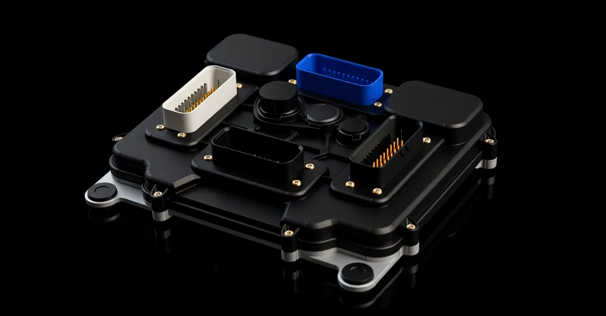

01 · Hardware
Sealed enclosure
The housing closes the electronics completely: black plastic cover on an aluminium base plate. All wiring enters through sealed connectors.
8-cylinder multi-injection ECU with torque-based engine control
Every cylinder has a direct injector and a port injector. Four cam phasers, fast start and a torque-based control model in one sealed unit for airboat engines.

Scroll through the unit — from the sealed enclosure to the board inside.
The housing closes the electronics completely: black plastic cover on an aluminium base plate. All wiring enters through sealed connectors.
Four sealed TE AMPSEAL 35-pin connectors, one per function group:
A single board carries the dual-core ARM processor and all power stages: drivers for 16 injectors, 8 ignition coils, 2 high-pressure pumps and 4 H-bridges. The connectors are soldered directly to it — no internal harness.
The aluminium base plate with cooling fins takes heat away from the power electronics. Four rubber mounts isolate the unit from hull and engine vibration.
Three main parts — cover, board and base plate — are held together with screws, so the unit can be opened for inspection.
One unit controls fuel, air, ignition and valve timing of a V8 engine, and records everything it does.
8 direct (GDI) injectors and 8 port injectors. Direct injection with 1–3 pulses per cycle and a high-voltage current profile; the share of port and direct fuel is set in the calibration.
16 injectors · 8 GDI + 8 PFITwo high-pressure fuel pump valves, one per bank, with closed-loop rail pressure control.
2 HPFP · 2 railsFour camshafts — intake and exhaust on each bank — with four cam phasers. Closed-loop control, oil pressure check, chain and phaser diagnostics, automatic tuning.
4 camshafts · 4 phasersThe unit finds the engine position from the camshaft shape before the crank wheel gap arrives, so the first injection and spark come sooner after cranking starts.
Sync in ~190° of crank on average, vs ~310° by the gapCrank wheels 36-1, 60-2, 36-2-2-2 or a cam-only wheel; camshaft shapes are described in the setup tool and checked with the built-in trigger logger.
Up to 4 camshaft inputsEight outputs for passive 12 V coils with adaptive dwell, or 5 V signals for coils with a built-in igniter.
8 coils · individual timing and knock controlFour H-bridge outputs for one or two electronic throttles and electric wastegates. End-stop learning and automatic PID tuning; SENT position sensors supported.
4 H-bridgesAir and torque model, lambda control, two knock sensor channels, wideband lambda and exhaust temperature from a CAN module. Pressures are sampled in sync with crank angle.
2 knock channels · wideband + EGT over CANInjection and spark come from hardware timers, never from a data bus. Three levels of supervision with an independent watchdog; on a fault the outputs are switched off. Fault codes in OBD format.
3-level supervisionCalibration, live data and logs over Ethernet in BrainBus GDI-8. Calibrations are stored with rollback; logs are written to onboard memory. A built-in ECU simulator lets you prepare a calibration before the engine runs.
Ethernet · 2 × CAN · LINThe unit has two processor cores. One runs the engine in real time: engine position, fuel, ignition, throttles, high-pressure pumps, cam phasers and knock control. The other handles Ethernet, CAN, diagnostics and logging, and supervises the first one.
The engine setup — trigger wheels, camshafts, injectors, coils, sensors — is done in the BrainBus GDI-8 application, without changing firmware.
First prototype boards are assembled. Firmware is verified with automated tests and an ECU simulator; testing on a running engine is the next stage. Boost control is planned.
Specifications may change before release. For project inquiries, write to info@ailuohai-tech.com.
Documentation Pinout